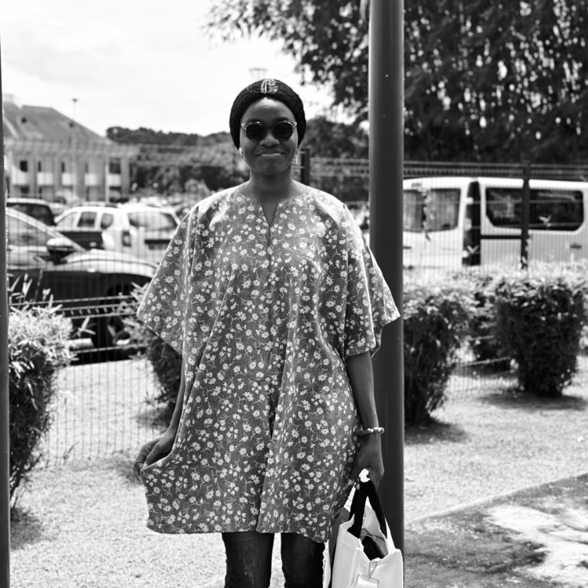
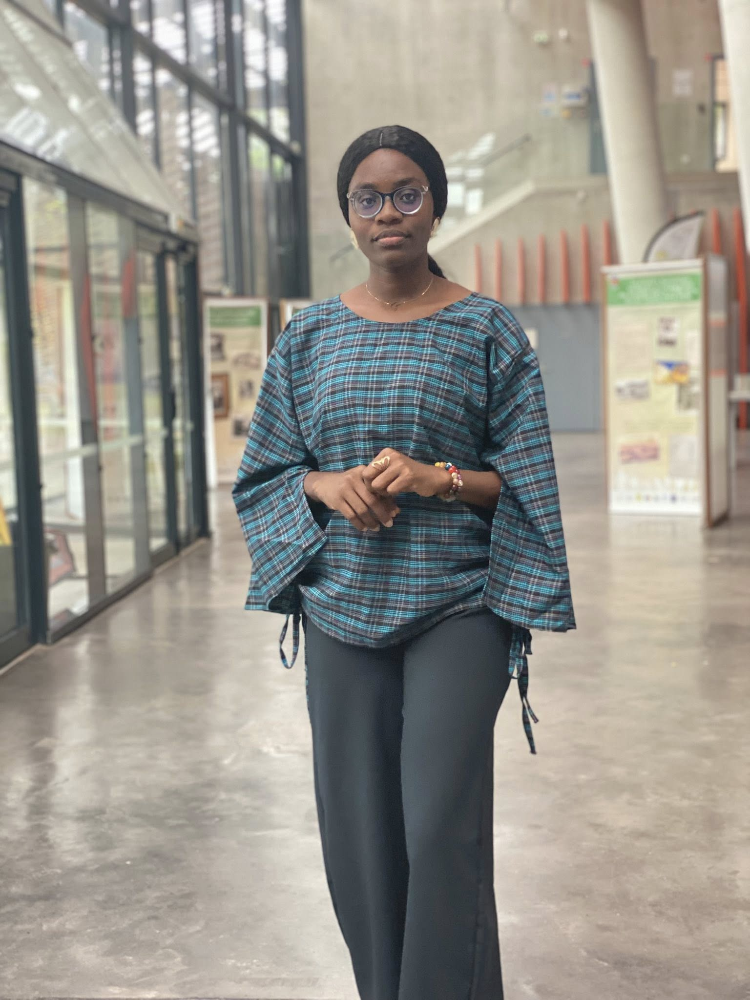

Ancrage
Basee a Grand-Popo, Benin
Une presence locale forte, proche du terrain et des personnes.
Synnova. pour un monde positif !
Communicante engagee et animatrice, j'accompagne les evenements, les prises de parole et les projets qui veulent marquer les esprits avec elegance et impact positif.
Ancrage
Une presence locale forte, proche du terrain et des personnes.
Positionnement
Une ligne claire pour parler juste, capter l'attention et creer du lien.
Signature
Une energie simple, humaine et memorable dans chaque prise de parole.
Reseaux
Des canaux directs pour suivre l'univers, les actions et les collaborations.
Visuels
La galerie ci-dessous permet maintenant de faire defiler les photos pour toutes les voir sans alourdir la page.





A propos
Je suis Synnova Belvine Tocloe, communicante polyvalente passionnee par les projets qui ont du sens. Mon univers relie la visibilite, l'animation, l'expression publique et l'engagement communautaire.
Ma demarche repose sur une conviction simple : la communication peut rapprocher, transformer et faire rayonner ce qui compte.
Domaines d'action
Communication, animation et impact positif se rejoignent ici dans une meme promesse : parler juste, toucher vrai et faire avancer ce qui merite d'etre vu.
Porter des messages clairs et coherents pour des institutions, des projets et des marques.
Creer du rythme, de la presence et une vraie connexion avec le public.
Valoriser des projets et des causes avec authenticite, chaleur et force publique.
Prendre contact
Une identite claire, une parole simple et des points d'entree directs pour ouvrir la conversation rapidement.